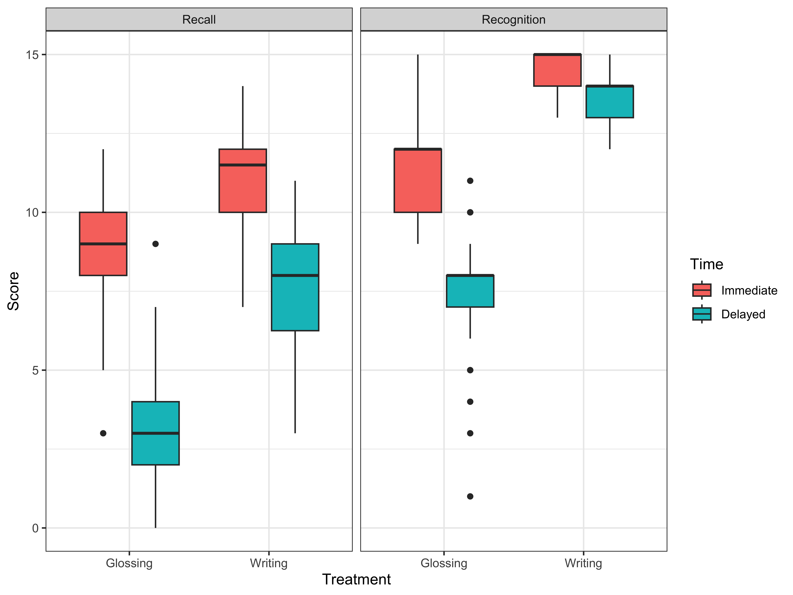
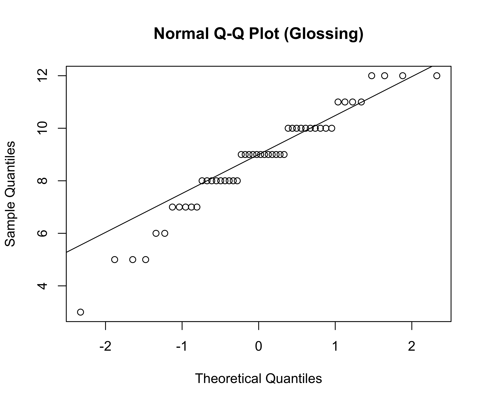
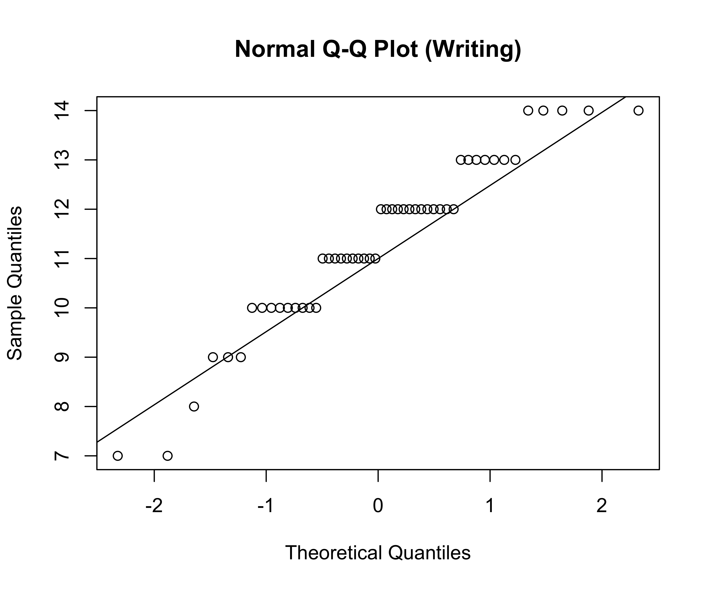
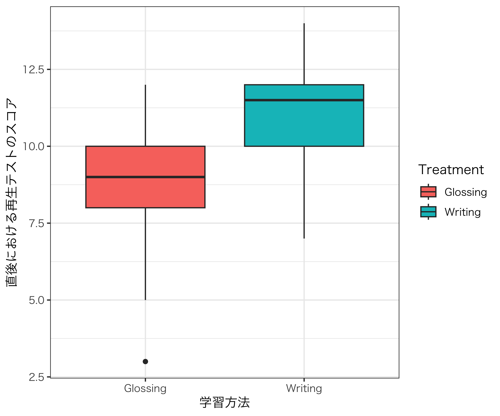
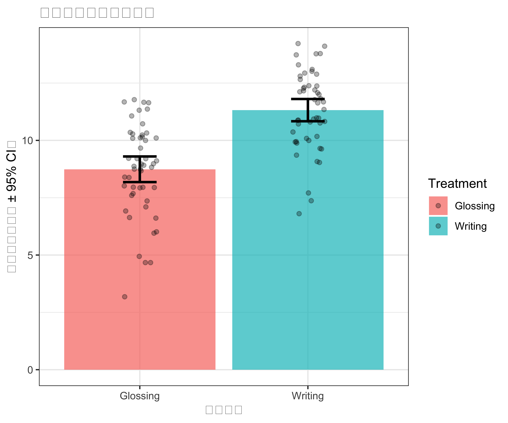

コードを表示
# パッケージの読み込み
pacman::p_load(tidyverse, gt, psych, performance, emmeans, lmerTest, DHARMa, sjPlot, effectsize, car, compute.es, pwr, brunnermunzel, MASS)
# テーマと乱数種の設定
theme_set(theme_bw())
set.seed(123)まずは英語教育研究で用いられる分析の基礎となる回帰分析 (regression analysis) について紹介します。回帰分析とは、\(y = ax + b +ε\)のような関数で表される統計モデルです。yを目的変数 (outcome variable; 従属変数 [dependent variable] や応答変数 [response variable] とも)、xを説明変数 (explanatory variable; 独立変数 [independent variable] や予測変数 [predictor variable] とも)、aを傾き (slope)、bを切片 (intercept)、εは誤差 (error) と呼ばれます。例えば、期末テストの点数を中間テストの点数で予測する分析をする際、期末テスト = 中間テスト * x + b + 誤差と表されます。説明変数を含めた「中間テスト * x + b + 誤差」の結びつきは線形結合 (linear combination) と呼ばれています。このような線型結合の統計モデルに対し、xが2乗や3乗になったり、対数を取ったりする回帰モデルは非線形モデル (nonlinear model) と呼ばれます。
線型モデルは目的変数が正規分布 (normal distribution) に従うことを前提とします。そのため、線型モデルでは正規分布に従わないデータ (e.g., 正解・不正解のような2値データ、発生回数のような頻度) は扱うことができません。このような場合、「分析の前提を満たしていないため目的変数を対数変換した」「ボンフェローニ補正を用いたノンパラメトリック分析で検討した」のような分析が行われることがありますが、正規分布に従わないデータは一般化線型モデル (generalized linear model) を用いた分析を用いることが一般的です。一般化線型モデルを検討する前に、まずは基本となるt検定 (t-test) から復習していきましょう。
データセットは、50人の参加者が2種類の語彙学習方法を用いて比較された架空のデータです。この研究では、目標語彙に集中する学習方法がより効果的であると仮定します。具体的には、注釈付きの読解よりも、目標語彙を使用して文章を作る方が学習効果が高いと考えられます。参加者は15個ずつの目標語を2つの方法で学び、L2からL1への翻訳テスト (recall test) と選択問題 (recognition test) でその知識を評価します。このテストは学習直後と1週間後の遅延で実施しました。この実験設定を前提に、t検定をRで実施してみましょう。
t検定：各学習方法で15語ずつ学習し、15点満点のテストで評価します。再生テストと再認テストの両方でt検定を行います。
以下のコードを実行してデータセットを作成します。
# パッケージの読み込み
pacman::p_load(tidyverse, gt, psych, performance, emmeans, lmerTest, DHARMa, sjPlot, effectsize, car, compute.es, pwr, brunnermunzel, MASS)
# テーマと乱数種の設定
theme_set(theme_bw())
set.seed(123)# サンプルデータの作成
# パラメータの設定
n_participants <- 50 # 50人の参加者
n_items <- 30 # 30項目の目標語
treatments <- c("Glossing", "Writing") # 学習条件は2種類
tests <- c("Recall", "Recognition") # テストは2種類
times <- c("Immediate", "Delayed") # テスト実施時期は2種類
# データフレームの作成
dat <- expand.grid(
Participant = 1:n_participants,
Item = 1:n_items,
Treatment = treatments,
Test = tests,
Time = times)
# アイテムの割り当てをTreatmentに基づいて修正
dat <- dat[dat$Treatment == "Glossing" & dat$Item <= 15 |
dat$Treatment == "Writing" & dat$Item > 15, ]
# スコアの割り当て
dat$Score <- ifelse(
dat$Treatment == "Glossing",
rbinom(nrow(dat), 1, ifelse(dat$Test == "Recognition", 0.5, 0.2)),
rbinom(nrow(dat), 1, ifelse(dat$Test == "Recognition", 0.9, 0.5)))
# Timeによるスコアの調整
dat$Score <- ifelse(
dat$Time == "Immediate",
dat$Score + sample(0:1, nrow(dat), replace = TRUE),
dat$Score)
# スコアが1を超えないように調整
dat$Score <- pmin(dat$Score, 1)
# csvとしてデータを出力
# write.csv(dat, "sample.csv")作成されたデータは50名の参加者に対して、2つの介入 (GlossingとWriting) を行っています。Glossingでは15語、Writingでは15語を学び、合計30語の目標語を学習します。その成果を直後と遅延で測定します。測定方法にはRecallとRecognitionの2種類のテストがあります。
このデータは以下のようにScoreの列が1か0の2値データとなっています。
head(dat) |>
gt()| Participant | Item | Treatment | Test | Time | Score |
|---|---|---|---|---|---|
| 1 | 1 | Glossing | Recall | Immediate | 1 |
| 2 | 1 | Glossing | Recall | Immediate | 1 |
| 3 | 1 | Glossing | Recall | Immediate | 1 |
| 4 | 1 | Glossing | Recall | Immediate | 1 |
| 5 | 1 | Glossing | Recall | Immediate | 1 |
| 6 | 1 | Glossing | Recall | Immediate | 1 |
ロジスティック回帰分析は目的変数 (Score) が2値のまま実行できるのですが、t検定やMANOVAは実行できません。そこで以下のようにコードで連続値へと足して15点満点にする必要があります。
# 参加者ごとにスコアを集計
dat_summarized <- dat |>
mutate(Participant = factor(Participant),
Item = factor(Item)) |>
group_by(Participant, Treatment, Test, Time) |>
summarize(Score = sum(Score), .groups = 'drop')
# 記述統計
dat_summarized |>
group_by(Treatment, Test, Time) |>
summarise(
Mean = mean(Score),
SD = sd(Score),
N = n(),
SE = SD / sqrt(N),
CI_lower = Mean - 1.96 * SE,
CI_upper = Mean + 1.96 * SE) |>
gt() |>
tab_header(
title = "Descriptive Statistics by Treatment, Test, and Time") |>
fmt_number(
columns = c(Mean, SD, SE, CI_lower, CI_upper),
decimals = 2)| Descriptive Statistics by Treatment, Test, and Time | ||||||
|---|---|---|---|---|---|---|
| Time | Mean | SD | N | SE | CI_lower | CI_upper |
| Glossing - Recall | ||||||
| Immediate | 8.74 | 1.97 | 50 | 0.28 | 8.19 | 9.29 |
| Delayed | 3.26 | 1.82 | 50 | 0.26 | 2.76 | 3.76 |
| Glossing - Recognition | ||||||
| Immediate | 11.42 | 1.53 | 50 | 0.22 | 11.00 | 11.84 |
| Delayed | 7.44 | 1.81 | 50 | 0.26 | 6.94 | 7.94 |
| Writing - Recall | ||||||
| Immediate | 11.32 | 1.71 | 50 | 0.24 | 10.85 | 11.79 |
| Delayed | 7.62 | 1.96 | 50 | 0.28 | 7.08 | 8.16 |
| Writing - Recognition | ||||||
| Immediate | 14.54 | 0.61 | 50 | 0.09 | 14.37 | 14.71 |
| Delayed | 13.56 | 1.05 | 50 | 0.15 | 13.27 | 13.85 |
以下は参加者がTreatment、Test、Timeごとに15点満点のテストで何点かを表しています。
head(dat_summarized) |>
gt()| Participant | Treatment | Test | Time | Score |
|---|---|---|---|---|
| 1 | Glossing | Recall | Immediate | 10 |
| 1 | Glossing | Recall | Delayed | 3 |
| 1 | Glossing | Recognition | Immediate | 11 |
| 1 | Glossing | Recognition | Delayed | 7 |
| 1 | Writing | Recall | Immediate | 14 |
| 1 | Writing | Recall | Delayed | 8 |
記述統計をプロットを見ると、RecallおよびRecognitionでImmediateの方がDelayedよりも高く、Writingの方がGlossingよりも高い点数である傾向があることがわかります。
ggplot(dat_summarized, aes(x = Treatment, y = Score, fill = Time)) +
geom_boxplot() +
facet_wrap(~ Test) +
labs(x = "Treatment", y = "Score") +
theme_bw()
t検定では目的変数が連続値、説明変数が1つで2水準のカテゴリカル変数である必要があります。そこで、そのようなデータセットを作成するため、以下のコードで直後と遅延ごとにRecallテストの結果をdat_imm、dat_delに格納します。
flowchart TD
A[データの準備] --> B{正規性の確認}
B -->|満たす| C{等分散性の確認}
B -->|満たさない| D[ノンパラメトリック検定]
C -->|満たす| E[Student's t検定]
C -->|満たさない| F[Welch's t検定]
E --> G[効果量の計算]
F --> G
D --> H[効果量の計算<br/>順位相関係数]
G --> I[結果の解釈]
H --> Iflowchart TD
A[データの準備] --> B{正規性の確認}
B -->|満たす| C{等分散性の確認}
B -->|満たさない| D[ノンパラメトリック検定]
C -->|満たす| E[Student's t検定]
C -->|満たさない| F[Welch's t検定]
E --> G[効果量の計算]
F --> G
D --> H[効果量の計算<br/>順位相関係数]
G --> I[結果の解釈]
H --> I
# 直後の再生テストのサブデータ
dat_imm <- dat_summarized |>
dplyr::filter(Time == "Immediate",
Test == "Recall")
# 遅延の再生テストのサブデータ
dat_del <- dat_summarized |>
dplyr::filter(Time == "Delayed",
Test == "Recall")今回はTreatment (Glossing vs. Writing)、テスト実施時期 (Time: Immediate vs. Delayed) という2つの説明変数があります。GlossingとWritingを検定で比較し、次にImmediateとDelayedで検定で比較することは検定の繰り返しと呼ばれるタイプ I エラーの可能性を高めてしまいます。
複数の検定を行う場合、第1種の過誤（タイプIエラー）の確率が増加します。例えば、有意水準5%で4回検定を行うと、少なくとも1回誤って有意差を検出する確率は約18.5%まで上昇します。
対処法： - Bonferroni補正：有意水準を検定回数で割る（例：0.05/4 = 0.0125） - Holm法：より検出力の高い段階的補正 - False Discovery Rate (FDR)：Benjamini-Hochberg法など - 多変量分散分析（MANOVA）や混合効果モデルの使用
そのため、2 × 2 の2 way ANOVAを実施することが適切であるように思われます。今回は説明のために直後テストに限定して、興味のある変数であるTreatmentをt検定で比較することとします。
# 直後における再生テストに関するt検定
Recall_Score_Imm <- subset(dat_imm, Test == "Recall")
Recall_T_Imm <- t.test(Score ~ Treatment, Recall_Score_Imm)
data.frame(
t_value = Recall_T_Imm$statistic,
df = Recall_T_Imm$parameter,
p_value = Recall_T_Imm$p.value,
CI_lower = Recall_T_Imm$conf.int[1],
CI_upper = Recall_T_Imm$conf.int[2],
Mean_Glossing = Recall_T_Imm$estimate[1],
Mean_Writing = Recall_T_Imm$estimate[2]) |>
gt() |>
tab_header(
title = "Recall Score: Treatment Effect Test Results") |>
fmt_number(
columns = t_value,
decimals = 4) |>
fmt_number(
columns = df,
decimals = 2) |>
fmt_scientific(
columns = p_value,
decimals = 2) |>
fmt_number(
columns = c(CI_lower, CI_upper),
decimals = 3) |>
fmt_number(
columns = c(Mean_Glossing, Mean_Writing),
decimals = 2) |>
cols_merge(
columns = c(CI_lower, CI_upper),
pattern = "[{1}, {2}]") |>
cols_label(
t_value = "t",
df = "df",
p_value = "p-value",
CI_lower = "95% CI",
Mean_Glossing = "Glossing",
Mean_Writing = "Writing") |>
tab_spanner(
label = "Test Statistics",
columns = c(t_value, df, p_value)) |>
tab_spanner(
label = "Group Means",
columns = c(Mean_Glossing, Mean_Writing)) |>
cols_align(
align = "center",
columns = everything()) |>
tab_style(
style = list(
cell_fill(color = "#f8f9fa"),
cell_text(weight = "bold")),
locations = cells_column_spanners())| Recall Score: Treatment Effect Test Results | |||||
|---|---|---|---|---|---|
Test Statistics
|
95% CI |
Group Means
|
|||
| t | df | p-value | Glossing | Writing | |
| −7.0034 | 96.10 | 3.40 × 10−10 | [−3.311, −1.849] | 8.74 | 11.32 |
# 遅延における再認テストに関するt検定
Recall_Score_Del <- subset(dat_del, Test == "Recall")
Recall_T_Del <- t.test(Score ~ Treatment, Recall_Score_Del)
data.frame(
t_value = Recall_T_Del$statistic,
df = Recall_T_Del$parameter,
p_value = Recall_T_Del$p.value,
CI_lower = Recall_T_Del$conf.int[1],
CI_upper = Recall_T_Del$conf.int[2],
Mean_Glossing = Recall_T_Del$estimate[1],
Mean_Writing = Recall_T_Del$estimate[2]) |>
gt() |>
tab_header(
title = "Recall Score: Treatment Effect Test Results") |>
fmt_number(
columns = t_value,
decimals = 4) |>
fmt_number(
columns = df,
decimals = 2) |>
fmt_scientific(
columns = p_value,
decimals = 2) |>
fmt_number(
columns = c(CI_lower, CI_upper),
decimals = 3) |>
fmt_number(
columns = c(Mean_Glossing, Mean_Writing),
decimals = 2) |>
cols_merge(
columns = c(CI_lower, CI_upper),
pattern = "[{1}, {2}]") |>
cols_label(
t_value = "t",
df = "df",
p_value = "p-value",
CI_lower = "95% CI",
Mean_Glossing = "Glossing",
Mean_Writing = "Writing") |>
tab_spanner(
label = "Test Statistics",
columns = c(t_value, df, p_value)) |>
tab_spanner(
label = "Group Means",
columns = c(Mean_Glossing, Mean_Writing)) |>
cols_align(
align = "center",
columns = everything()) |>
tab_style(
style = list(
cell_fill(color = "#f8f9fa"),
cell_text(weight = "bold")),
locations = cells_column_spanners())| Recall Score: Treatment Effect Test Results | |||||
|---|---|---|---|---|---|
Test Statistics
|
95% CI |
Group Means
|
|||
| t | df | p-value | Glossing | Writing | |
| −11.5454 | 97.45 | 6.05 × 10−20 | [−5.109, −3.611] | 3.26 | 7.62 |
~ (チルダ) の左側には目的変数、右側には説明変数を取ります。t検定は目的変数が1つの連続値、説明変数が2水準のカテゴリカル変数の線型モデルです。そのため、正規性や等分散性などの分析の前提をクリアしていなければなりません。
正規性はシャピロ・ウィルク検定やQQプロット、等分散性はF検定やルビーン検定を使って判定します。具体的には以下のようなコードで実行できます。
【正規性の確認：シャピロ・ウィルク検定】
# 正規分布のチェック：p値が.05より小さければOK
# Run Shapiro-Wilk tests and store results
shapiro_glossing <- shapiro.test(subset(dat_imm, Treatment == "Glossing")$Score)
shapiro_writing <- shapiro.test(subset(dat_imm, Treatment == "Writing")$Score)
# Create data frame with raw values
data.frame(
Treatment = c("Glossing", "Writing"),
W_statistic = c(shapiro_glossing$statistic, shapiro_writing$statistic),
p_value = c(shapiro_glossing$p.value, shapiro_writing$p.value),
Normality = c(
ifelse(shapiro_glossing$p.value > 0.05, "Normal", "Non-normal"),
ifelse(shapiro_writing$p.value > 0.05, "Normal", "Non-normal"))) |>
gt() |>
tab_header(
title = "Shapiro-Wilk Normality Test Results",
subtitle = "Score Distribution by Treatment Group") |>
fmt_number(
columns = W_statistic,
decimals = 5) |>
fmt_number(
columns = p_value,
decimals = 5) |>
cols_label(
Treatment = "Treatment Group",
W_statistic = "W Statistic",
p_value = "p-value",
Normality = "Distribution") |>
tab_style(
style = cell_fill(color = "#ffe6e6"),
locations = cells_body(
columns = c(p_value, Normality),
rows = p_value < 0.05)) |>
tab_style(
style = cell_fill(color = "#e6ffe6"),
locations = cells_body(
columns = c(p_value, Normality),
rows = p_value >= 0.05)) |>
tab_style(
style = list(
cell_text(weight = "bold"),
cell_fill(color = "#f0f0f0")),
locations = cells_body(
columns = Treatment)) |>
cols_align(
align = "center",
columns = c(W_statistic, p_value, Normality)) |>
tab_footnote(
footnote = "α = 0.05; p < 0.05 indicates departure from normality",
locations = cells_column_labels(columns = p_value))| Shapiro-Wilk Normality Test Results | |||
|---|---|---|---|
| Score Distribution by Treatment Group | |||
| Treatment Group | W Statistic | p-value1 | Distribution |
| Glossing | 0.95019 | 0.03475 | Non-normal |
| Writing | 0.94252 | 0.01696 | Non-normal |
| 1 α = 0.05; p < 0.05 indicates departure from normality | |||
【正規性の確認：QQプロット】
# QQプロット（Glossing）
qqnorm(subset(dat_imm, Treatment == "Glossing")$Score,
main = "Normal Q-Q Plot (Glossing)")
qqline(subset(dat_imm, Treatment == "Glossing")$Score)
# QQプロット（Writing）
qqnorm(subset(dat_imm, Treatment == "Writing")$Score,
main = "Normal Q-Q Plot (Writing)")
qqline(subset(dat_imm, Treatment == "Writing")$Score)
【等分散性の検定：F検定】
# F検定(等分散性のチェック)：p値が.05より大きければOK
var_test_result <- var.test(Score ~ Treatment, data = dat_imm)
data.frame(
F_stat = var_test_result$statistic,
df_num = var_test_result$parameter[1],
df_denom = var_test_result$parameter[2],
p_value = var_test_result$p.value,
CI_lower = var_test_result$conf.int[1],
CI_upper = var_test_result$conf.int[2],
ratio = var_test_result$estimate) |>
gt() |>
tab_header(
title = "Levene's Test Alternative: F Test for Homogeneity of Variances",
subtitle = "Comparing Glossing and Writing Groups") |>
fmt_number(
columns = c(F_stat, ratio),
decimals = 4) |>
fmt_number(
columns = c(df_num, df_denom),
decimals = 0) |>
fmt_number(
columns = p_value,
decimals = 4) |>
fmt_number(
columns = c(CI_lower, CI_upper),
decimals = 4) |>
cols_merge(
columns = c(CI_lower, CI_upper),
pattern = "[{1}, {2}]") |>
cols_merge(
columns = c(df_num, df_denom),
pattern = "{1}, {2}") |>
cols_label(
F_stat = "F",
df_num = "df",
p_value = "p-value",
CI_lower = "95% CI",
ratio = "Variance Ratio") |>
cols_align(
align = "center",
columns = everything()) |>
tab_style(
style = case_when(
var_test_result$p.value > 0.05 ~ list(
cell_fill(color = "#e6ffe6"),
cell_text(weight = "bold")),
TRUE ~ list(
cell_fill(color = "#ffe6e6"),
cell_text(weight = "bold"))),
locations = cells_body(columns = p_value)) |>
tab_spanner(
label = "Test Statistics",
columns = c(F_stat, df_num, p_value)) |>
tab_spanner(
label = "Variance Comparison",
columns = c(CI_lower, ratio)) |>
tab_source_note(
source_note = md("**Decision**: p = 0.3252 > 0.05 → Assume equal variances (use Student's t-test)"))| Levene's Test Alternative: F Test for Homogeneity of Variances | ||||
|---|---|---|---|---|
| Comparing Glossing and Writing Groups | ||||
Test Statistics
|
Variance Comparison
|
|||
| F | df | p-value | 95% CI | Variance Ratio |
| 1.3271 | 49, 49 | 0.3252 | [0.7531, 2.3386] | 1.3271 |
| Decision: p = 0.3252 > 0.05 → Assume equal variances (use Student’s t-test) | ||||
【等分散性の検定：Levene検定】
# Levene検定(等分散性のチェック)：p値が.05より大きければOK
levene_result <- leveneTest(Score ~ Treatment, data = dat_imm)
data.frame(
F_statistic = levene_result$`F value`[1],
df_group = levene_result$Df[1],
df_residual = levene_result$Df[2],
p_value = levene_result$`Pr(>F)`[1]) |>
gt() |>
tab_header(
title = "Levene's Test for Homogeneity of Variance",
subtitle = "Score by Treatment (center = median)") |>
fmt_number(
columns = F_statistic,
decimals = 3) |>
fmt_number(
columns = c(df_group, df_residual),
decimals = 0) |>
fmt_number(
columns = p_value,
decimals = 4) |>
cols_merge(
columns = c(df_group, df_residual),
pattern = "{1}, {2}") |>
cols_label(
F_statistic = "F",
df_group = "df",
p_value = "p-value") |>
cols_add(
Decision = ifelse(levene_result$`Pr(>F)`[1] > 0.05,
"Equal variances",
"Unequal variances")) |>
cols_align(
align = "center",
columns = everything()) |>
tab_style(
style = list(
cell_fill(color = "#e6ffe6"),
cell_text(weight = "bold")),
locations = cells_body(
columns = p_value,
rows = p_value > 0.05)) |>
tab_style(
style = list(
cell_fill(color = "#ffe6e6"),
cell_text(weight = "bold")),
locations = cells_body(
columns = p_value,
rows = p_value <= 0.05)) |>
tab_style(
style = cell_text(weight = "bold"),
locations = cells_body(columns = Decision)) |>
tab_source_note(
source_note = "H₀: Group variances are equal | α = 0.05") |>
tab_options(
table.width = pct(80),
table.font.size = 13)| Levene's Test for Homogeneity of Variance | |||
|---|---|---|---|
| Score by Treatment (center = median) | |||
| F | df | p-value | Decision |
| 0.177 | 1, 98 | 0.6749 | Equal variances |
| H₀: Group variances are equal | α = 0.05 | |||
等分散性が満たされなかった場合やサンプルサイズが小さい場合には、Welchのt検定の使用が推奨されます。
# 等分散性が満たされなかった場合にはWelchのt検定を行う
Recall_T_Imm_Welch <- t.test(Score ~ Treatment, Recall_Score_Imm, var.equal = F)
# Create compact table with raw values
data.frame(
t_value = Recall_T_Imm_Welch$statistic,
df = Recall_T_Imm_Welch$parameter,
p_value = Recall_T_Imm_Welch$p.value,
CI_lower = Recall_T_Imm_Welch$conf.int[1],
CI_upper = Recall_T_Imm_Welch$conf.int[2],
Mean_Glossing = Recall_T_Imm_Welch$estimate[1],
Mean_Writing = Recall_T_Imm_Welch$estimate[2],
Mean_Diff = Recall_T_Imm_Welch$estimate[2] - Recall_T_Imm_Welch$estimate[1]) |>
gt() |>
tab_header(
title = "Welch Two Sample t-test",
subtitle = "Recall Score: Glossing vs Writing (unequal variances assumed)") |>
fmt_number(
columns = t_value,
decimals = 4) |>
fmt_number(
columns = df,
decimals = 3) |>
fmt_scientific(
columns = p_value,
decimals = 3) |>
fmt_number(
columns = c(CI_lower, CI_upper),
decimals = 3) |>
fmt_number(
columns = c(Mean_Glossing, Mean_Writing, Mean_Diff),
decimals = 2) |>
cols_merge(
columns = c(CI_lower, CI_upper),
pattern = "[{1}, {2}]") |>
cols_label(
t_value = "t",
df = "df",
p_value = "p-value",
CI_lower = "95% CI",
Mean_Glossing = "Glossing",
Mean_Writing = "Writing",
Mean_Diff = "Difference") |>
tab_spanner(
label = "Test Statistics",
columns = c(t_value, df, p_value)) |>
tab_spanner(
label = "Group Means",
columns = c(Mean_Glossing, Mean_Writing)) |>
cols_align(
align = "center",
columns = everything()) |>
tab_style(
style = list(
cell_fill(color = "#ffe6e6"),
cell_text(weight = "bold")),
locations = cells_body(
columns = p_value)) |>
tab_style(
style = list(
cell_fill(color = "#fff3cd"),
cell_text(weight = "bold")),
locations = cells_body(
columns = Mean_Diff)) |>
tab_style(
style = list(
cell_fill(color = "#f8f9fa"),
cell_text(weight = "bold")),
locations = cells_column_spanners()) |>
tab_footnote(
footnote = "Significant difference: Writing group scored 2.58 points higher",
locations = cells_body(
columns = Mean_Diff,
rows = 1)) |>
tab_source_note(
source_note = "***p < 0.001; Effect is statistically significant")| Welch Two Sample t-test | ||||||
| Recall Score: Glossing vs Writing (unequal variances assumed) | ||||||
|
Test Statistics
|
95% CI |
Group Means
|
Difference | |||
|---|---|---|---|---|---|---|
| t | df | p-value | Glossing | Writing | ||
| −7.0034 | 96.101 | 3.402 × 10−10 | [−3.311, −1.849] | 8.74 | 11.32 | 2.581 |
| ***p < 0.001; Effect is statistically significant | ||||||
| 1 Significant difference: Writing group scored 2.58 points higher | ||||||
正規性が満たされない場合： - Mann-Whitney U検定（Wilcoxon rank-sum test） - 順位変換後のt検定 - ブートストラップ法
等分散性が満たされない場合： - Welchのt検定（上記） - ブルンナー・ムンツェル検定
# Mann-Whitney U検定
wilcox_result <- wilcox.test(Score ~ Treatment, data = Recall_Score_Imm)
data.frame(
W_statistic = wilcox_result$statistic,
p_value = wilcox_result$p.value,
Method = "Mann-Whitney U") |>
gt() |>
tab_header(
title = "Wilcoxon Rank Sum Test (Mann-Whitney U)",
subtitle = "Recall Score: Glossing vs Writing") |>
fmt_number(
columns = W_statistic,
decimals = 1) |>
fmt_scientific(
columns = p_value,
decimals = 3) |>
cols_label(
W_statistic = "W",
p_value = "p-value",
Method = "Test") |>
cols_add(
Decision = ifelse(wilcox_result$p.value < 0.001,
"Significant difference***",
ifelse(wilcox_result$p.value < 0.05,
"Significant difference*",
"No significant difference"))) |>
cols_align(
align = "center",
columns = everything()) |>
tab_style(
style = list(
cell_fill(color = "#ffe6e6"),
cell_text(weight = "bold")),
locations = cells_body(
columns = p_value)) |>
tab_source_note(
source_note = "H₀: No location shift between groups | ***p < 0.001")
# Brunner-Munzel検定
bm_result <- brunnermunzel.test(Score ~ Treatment, data = Recall_Score_Imm)
data.frame(
BM_statistic = bm_result$statistic,
df = bm_result$parameter,
p_value = bm_result$p.value,
CI_lower = bm_result$conf.int[1],
CI_upper = bm_result$conf.int[2],
Probability = bm_result$estimate) |>
gt() |>
tab_header(
title = "Brunner-Munzel Test",
subtitle = "Recall Score: Glossing vs Writing (robust to unequal variances)") |>
fmt_number(
columns = BM_statistic,
decimals = 4) |>
fmt_number(
columns = df,
decimals = 3) |>
fmt_scientific(
columns = p_value,
decimals = 3) |>
fmt_number(
columns = c(CI_lower, CI_upper),
decimals = 4) |>
fmt_number(
columns = Probability,
decimals = 3) |>
cols_merge(
columns = c(CI_lower, CI_upper),
pattern = "[{1}, {2}]") |>
cols_label(
BM_statistic = "BM Statistic",
df = "df",
p_value = "p-value",
CI_lower = "95% CI",
Probability = "P(X<Y) + 0.5P(X=Y)") |>
tab_spanner(
label = "Test Statistics",
columns = c(BM_statistic, df, p_value)) |>
tab_spanner(
label = "Effect Size",
columns = c(CI_lower, Probability)) |>
cols_align(
align = "center",
columns = everything()) |>
tab_style(
style = list(
cell_fill(color = "#ffe6e6"),
cell_text(weight = "bold")),
locations = cells_body(
columns = p_value)) |>
tab_style(
style = list(
cell_fill(color = "#e6f3ff"),
cell_text(weight = "bold")),
locations = cells_body(
columns = Probability)) |>
tab_footnote(
footnote = "Probability that a Writing score exceeds a Glossing score",
locations = cells_body(
columns = Probability,
rows = 1)) |>
tab_source_note(
source_note = "***p < 0.001; Writing group significantly outperforms Glossing group")t検定をはじめ、カテゴリカル変数の比較ではサンプルサイズが大きくなると、p値が小さくなります。これは、サンプルサイズが大きくなると標準誤差が小さくなることに起因します。標準誤差はp値を計算するために必要なt値の値を変化させ、間接的にp値の推定に影響を与えます。そのため介入の効果がほとんど差がない状態であったとしても、サンプルサイズが大きくなれば、p値は小さくなり、有意差が見られます。サンプルサイズに影響を受けない値として効果量があります。
t検定で使われる効果量にはCohen’s d、Hedges’s gがあります。
| Cohen’s d | 効果の大きさ | 解釈 |
|---|---|---|
| 0.2 | 小 (Small) | わずかな差。肉眼では判別困難 |
| 0.5 | 中 (Medium) | 中程度の差。注意深く観察すれば分かる |
| 0.8 | 大 (Large) | 大きな差。明確に判別可能 |
効果量の符号（＋/－）は、どちらのグループを基準にするかで変わります。解釈する際は絶対値で判断し、どちらのグループが優れているかは平均値や箱ひげ図で確認してください。
Rでこれらの効果量を計算する際にはeffectsizeパッケージを使うこととなります。
# 効果量
cohens_result <- effectsize::cohens_d(Score ~ Treatment, data = Recall_Score_Imm)
hedges_result <- effectsize::hedges_g(Score ~ Treatment, data = Recall_Score_Imm)
# Create compact effect size table
data.frame(
Effect_Size = c("Cohen's d", "Hedges' g"),
Estimate = c(cohens_result$Cohens_d, hedges_result$Hedges_g),
CI_lower = c(cohens_result$CI_low, hedges_result$CI_low),
CI_upper = c(cohens_result$CI_high, hedges_result$CI_high)) |>
mutate(
Magnitude = case_when(
abs(Estimate) < 0.2 ~ "Negligible",
abs(Estimate) < 0.5 ~ "Small",
abs(Estimate) < 0.8 ~ "Medium",
abs(Estimate) < 1.2 ~ "Large",
TRUE ~ "Very Large")) |>
gt() |>
tab_header(
title = "Effect Size Measures",
subtitle = "Recall Score: Glossing vs Writing (negative values favor Writing)") |>
fmt_number(
columns = c(Estimate, CI_lower, CI_upper),
decimals = 2) |>
cols_merge(
columns = c(CI_lower, CI_upper),
pattern = "[{1}, {2}]") |>
cols_label(
Effect_Size = "Measure",
Estimate = "Value",
CI_lower = "95% CI",
Magnitude = "Interpretation") |>
cols_align(
align = "center",
columns = c(Estimate, CI_lower, Magnitude)) |>
tab_style(
style = list(
cell_fill(color = "#e6f3ff"),
cell_text(weight = "bold")),
locations = cells_body(
columns = Estimate)) |>
tab_style(
style = list(
cell_fill(color = "#fff3cd"),
cell_text(weight = "bold")),
locations = cells_body(
columns = Magnitude)) |>
tab_footnote(
footnote = "Estimated using pooled SD",
locations = cells_column_labels(columns = Estimate)) |>
tab_source_note(
source_note = "Interpretation: |d| > 1.2 indicates a very large effect size")| Effect Size Measures | |||
| Recall Score: Glossing vs Writing (negative values favor Writing) | |||
| Measure | Value1 | 95% CI | Interpretation |
|---|---|---|---|
| Cohen's d | −1.40 | [−1.84, −0.96] | Very Large |
| Hedges' g | −1.39 | [−1.82, −0.95] | Very Large |
| Interpretation: |d| > 1.2 indicates a very large effect size | |||
| 1 Estimated using pooled SD | |||
得られた結果は以下の通りです。Cohen’s d = -1.40 [-1.84, -0.96]、Hedge’s d = -1.39 [-1.82, -0.95] であることから、効果量大であると判断できます。
得られた結果は以下の通りです。この結果はp値が非常に小さいため、GlossingとWritingの間で有意な差が見られたという結果でした。具体的に、どちらが大きかったのかは結果を可視化して確認することが望ましいです。t検定やANOVAであれば可視化せずとも間違えないかもしれませんが、複雑なモデリングでは符号を誤ってしまうタイプSエラーが生じる可能性があります。
ggplot2パッケージを使った可視化の方法については以下の通りです。
# 直後における再生テストスコアのデータで箱ひげ図を作成
ggplot(Recall_Score_Imm, aes(x = Treatment, y = Score, fill = Treatment)) +
geom_boxplot() +
labs(x = "学習方法", y = "直後における再生テストのスコア") +
theme_bw(base_family = "HiraKakuPro-W3")
# 平均値と95%信頼区間を表示
dat_summary <- Recall_Score_Imm |>
group_by(Treatment) |>
summarise(
mean = mean(Score),
sd = sd(Score),
n = n(),
se = sd/sqrt(n),
ci_lower = mean - qt(0.975, n-1) * se,
ci_upper = mean + qt(0.975, n-1) * se)
ggplot(dat_summary, aes(x = Treatment, y = mean, fill = Treatment)) +
geom_col(alpha = 0.7) +
geom_errorbar(aes(ymin = ci_lower, ymax = ci_upper),
width = 0.2, size = 1) +
geom_point(data = Recall_Score_Imm,
aes(x = Treatment, y = Score),
position = position_jitter(width = 0.1),
alpha = 0.3) +
labs(x = "学習方法",
y = "スコア（平均値 ± 95% CI）",
title = "直後再生テストの結果") +
theme_bw()
箱ひげ図を見るとWritingの方がGlossingよりも有意に高いスコアを獲得することがわかります (p < .01, t = -7.00, df = 96.10)。この結果は大きな効果量が得られたことから、実質的に差があることが示されました (Cohen’s d = -1.40 [-1.84, -0.96])。
効果量は大きく、非標準化効果量と標準化効果量の2種類があります。非標準化効果量は回帰分析における係数βやオッズ比を指し、標準化効果量はCohen’s dやHedges’s gを指します。
標準化効果量はcompute.esパッケージを使うと簡単に計算できます。mes()関数は引数m.1にグループ1の平均、m.2にグループ2の平均、sd.1にグループ1の標準偏差、sd.2にグループ2の標準偏差、n.1にグループ1のサンプルサイズ、n.2にグループ2のサンプルサイズをそれぞれ指定します。今回はグループ1は平均値10、標準偏差1、30名の参加者とし、グループ2は平均値12、標準偏差1.3、30名の参加者とします。
# 効果量の計算
mes_result <- mes(
m.1 = 10, m.2 = 12,
sd.1 = 1, sd.2 = 1.3,
n.1 = 30, n.2 = 30)Mean Differences ES:
d [ 95 %CI] = -1.72 [ -2.32 , -1.13 ]
var(d) = 0.09
p-value(d) = 0
U3(d) = 4.23 %
CLES(d) = 11.13 %
Cliff's Delta = -0.78
g [ 95 %CI] = -1.7 [ -2.29 , -1.12 ]
var(g) = 0.09
p-value(g) = 0
U3(g) = 4.44 %
CLES(g) = 11.44 %
Correlation ES:
r [ 95 %CI] = -0.66 [ -0.78 , -0.49 ]
var(r) = 0
p-value(r) = 0
z [ 95 %CI] = -0.79 [ -1.05 , -0.53 ]
var(z) = 0.02
p-value(z) = 0
Odds Ratio ES:
OR [ 95 %CI] = 0.04 [ 0.01 , 0.13 ]
p-value(OR) = 0
Log OR [ 95 %CI] = -3.13 [ -4.2 , -2.05 ]
var(lOR) = 0.3
p-value(Log OR) = 0
Other:
NNT = -5.13
Total N = 60data.frame(
d = mes_result$d,
d_CI_lower = mes_result$l.d,
d_CI_upper = mes_result$u.d,
g = mes_result$g,
g_CI_lower = mes_result$l.g,
g_CI_upper = mes_result$u.g,
r = mes_result$r,
r_CI_lower = mes_result$l.r,
r_CI_upper = mes_result$u.r,
OR = mes_result$OR,
OR_CI_lower = mes_result$l.or,
OR_CI_upper = mes_result$u.or,
NNT = mes_result$NNT) |>
gt() |>
tab_header(
title = "Comprehensive Effect Size Analysis",
subtitle = "Group 1 (M=10, SD=1, n=30) vs Group 2 (M=12, SD=1.3, n=30)") |>
fmt_number(
columns = c(d, g, r),
decimals = 2) |>
fmt_number(
columns = c(d_CI_lower, d_CI_upper, g_CI_lower, g_CI_upper,
r_CI_lower, r_CI_upper),
decimals = 2) |>
fmt_number(
columns = c(OR, OR_CI_lower, OR_CI_upper),
decimals = 2) |>
fmt_number(
columns = NNT,
decimals = 2) |>
cols_merge(
columns = c(d_CI_lower, d_CI_upper),
pattern = "[{1}, {2}]") |>
cols_merge(
columns = c(g_CI_lower, g_CI_upper),
pattern = "[{1}, {2}]") |>
cols_merge(
columns = c(r_CI_lower, r_CI_upper),
pattern = "[{1}, {2}]") |>
cols_merge(
columns = c(OR_CI_lower, OR_CI_upper),
pattern = "[{1}, {2}]") |>
cols_label(
d = "Cohen's d",
d_CI_lower = "95% CI",
g = "Hedges' g",
g_CI_lower = "95% CI",
r = "r",
r_CI_lower = "95% CI",
OR = "OR",
OR_CI_lower = "95% CI",
NNT = "NNT") |>
tab_spanner(
label = "Mean Differences",
columns = c(d, d_CI_lower, g, g_CI_lower)) |>
tab_spanner(
label = "Correlation",
columns = c(r, r_CI_lower)) |>
tab_spanner(
label = "Odds Ratio",
columns = c(OR, OR_CI_lower)) |>
cols_align(
align = "center",
columns = everything()) |>
tab_style(
style = list(
cell_fill(color = "#f8f9fa"),
cell_text(weight = "bold")),
locations = cells_column_spanners())| Comprehensive Effect Size Analysis | ||||||||
|---|---|---|---|---|---|---|---|---|
| Group 1 (M=10, SD=1, n=30) vs Group 2 (M=12, SD=1.3, n=30) | ||||||||
Mean Differences
|
Correlation
|
Odds Ratio
|
NNT | |||||
| Cohen's d | 95% CI | Hedges' g | 95% CI | r | 95% CI | OR | 95% CI | |
| −1.72 | [−2.32, −1.13] | −1.70 | [−2.29, −1.12] | −0.66 | [−0.78, −0.49] | 0.04 | [0.01, 0.13] | −5.13 |
出力結果のdはCohen’s d、gはHedges’s gをそれぞれ表しています。U3はCohen (1988) で提唱された方法で、効果量を正規分布の重複の割合として表現するものです。この値は、一方のグループのスコアの何パーセントが他のグループの平均スコアを超えるかを表します。母集団の平均が等しい場合、U3は50％です。今回は4.23%であり、基準となる50%から大きく離れているため、2つのグループは別の集団であるように思われます。
CLES (Common Language Effect Size) は、ある母集団からランダムに選ばれたスコアが別の母集団からのランダムに選ばれたスコアよりも大きい確率を示します (McGraw & Wong, 1992)。今回は11.3%であるため、グループ1の平均値がグループ2の平均値よりも大きい可能性は11.3%であると解釈できます。つまり、2つのグループ間の差は大きいと言えます。ただし、どちらのグループを基準にするかでCohen’s dの係数が変わるため (今回はグループ1を基準にしているためマイナスの係数がついています)、大きいか小さいかの解釈が異なる点には注意が必要です。
Cliffのデルタは、一方の母集団の個人がもう一方の母集団の個人よりも良い結果を持つ確率を示します。0に近いほど群間差が小さく、-1または1に近いほど群間差が大きいことを意味します。Cohenのdの頑健な代替であり、非正規データや順序データに適しています。
相関係数rはCohen’s dを用いて以下のように計算されます。
\[r = \frac{d}{\sqrt{d^2 + a}}\]
rの値が大きい場合、rをフィッシャーのzに変換することが多いです。
\[z = 0.5 \cdot \log \left(\frac{1 + r}{1 - r}\right)\]
NNT (number needed to treat) は、あるグループで好ましい結果を得るために治療が必要な参加者の数として解釈されます。compute.esパッケージでは、NNTはdから直接計算され、以下の式を使用します。
\(NNT = \frac{1}{\Phi(d - \Psi(CER)) - CER}\)
なお、NNTに関してはmes()関数の引数であるm.1とm.2を入れ替えると値が大きく変化します。Cohen’s dの係数やCLESと同じように解釈には十分注意が必要です。
研究を計画する際、適切なサンプルサイズを決定することは重要です。検定力（Power）は、真の効果が存在する場合にそれを検出できる確率を示します。
一般的に以下の基準が用いられます： - 検定力：0.80以上（80%以上の確率で効果を検出） - 有意水準（α）：0.05 - 効果量：先行研究や予備実験から推定
# 中程度の効果量（d = 0.5）を検出するのに必要なサンプルサイズ
sample_size_calc <- pwr.t.test(
d = 0.5, # 効果量
sig.level = 0.05, # 有意水準
power = 0.80, # 検定力
type = "two.sample", # 2群の比較
alternative = "two.sided" # 両側検定
)
post_hoc_power <- pwr.t.test(
n = 50,
d = 1.40,
sig.level = 0.05,
type = "two.sample",
alternative = "two.sided")
data.frame(
Analysis = c("Required Sample Size", "Post-hoc Power"),
n = c(sample_size_calc$n, post_hoc_power$n),
d = c(sample_size_calc$d, post_hoc_power$d),
alpha = c(sample_size_calc$sig.level, post_hoc_power$sig.level),
power = c(sample_size_calc$power, post_hoc_power$power),
Purpose = c(
"Minimum n for medium effect",
"Actual power in current study")) |>
gt() |>
tab_header(
title = "Power Analysis Results",
subtitle = "Two-sample t-test (two-sided)") |>
fmt_number(
columns = n,
decimals = 0) |>
fmt_number(
columns = d,
decimals = 2) |>
fmt_number(
columns = alpha,
decimals = 2) |>
fmt_percent(
columns = power,
decimals = 1) |>
cols_label(
Analysis = "Analysis Type",
n = "n (per group)",
d = "Cohen's d",
alpha = "α",
power = "Power",
Purpose = "Description") |>
cols_align(
align = "center",
columns = c(n, d, alpha, power)) |>
tab_style(
style = list(
cell_fill(color = "#e6f3ff"),
cell_text(weight = "bold")),
locations = cells_body(
columns = n,
rows = 1)) |>
tab_style(
style = list(
cell_fill(color = "#e6ffe6"),
cell_text(weight = "bold")),
locations = cells_body(
columns = power,
rows = 2)) |>
tab_footnote(
footnote = "n = 64 per group needed for 80% power with d = 0.5",
locations = cells_body(
columns = n,
rows = 1)) |>
tab_footnote(
footnote = "Current study has >99.9% power with observed d = 1.40",
locations = cells_body(
columns = power,
rows = 2)) |>
tab_source_note(
source_note = "NOTE: n is number in each group (total N = 2n)")| Power Analysis Results | |||||
| Two-sample t-test (two-sided) | |||||
| Analysis Type | n (per group) | Cohen's d | α | Power | Description |
|---|---|---|---|---|---|
| Required Sample Size | 641 | 0.50 | 0.05 | 80.0% | Minimum n for medium effect |
| Post-hoc Power | 50 | 1.40 | 0.05 | 100.0%2 | Actual power in current study |
| NOTE: n is number in each group (total N = 2n) | |||||
| 1 n = 64 per group needed for 80% power with d = 0.5 | |||||
| 2 Current study has >99.9% power with observed d = 1.40 | |||||
# Detailed power curve analysis
data.frame(
Effect_Size = c("Small", "Medium", "Large", "Observed"),
d = c(0.2, 0.5, 0.8, 1.40),
n_80 = c(
pwr.t.test(d = 0.2, sig.level = 0.05, power = 0.80, type = "two.sample")$n,
pwr.t.test(d = 0.5, sig.level = 0.05, power = 0.80, type = "two.sample")$n,
pwr.t.test(d = 0.8, sig.level = 0.05, power = 0.80, type = "two.sample")$n,
NA),
n_90 = c(
pwr.t.test(d = 0.2, sig.level = 0.05, power = 0.90, type = "two.sample")$n,
pwr.t.test(d = 0.5, sig.level = 0.05, power = 0.90, type = "two.sample")$n,
pwr.t.test(d = 0.8, sig.level = 0.05, power = 0.90, type = "two.sample")$n,
NA),
power_n50 = c(
pwr.t.test(n = 50, d = 0.2, sig.level = 0.05, type = "two.sample")$power,
pwr.t.test(n = 50, d = 0.5, sig.level = 0.05, type = "two.sample")$power,
pwr.t.test(n = 50, d = 0.8, sig.level = 0.05, type = "two.sample")$power,
pwr.t.test(n = 50, d = 1.40, sig.level = 0.05, type = "two.sample")$power)) |>
gt() |>
tab_header(
title = "Power Analysis Scenarios",
subtitle = "Sample size requirements and achieved power (α = 0.05, two-sided)") |>
fmt_number(
columns = d,
decimals = 2) |>
fmt_number(
columns = c(n_80, n_90),
decimals = 0) |>
fmt_percent(
columns = power_n50,
decimals = 1) |>
cols_label(
Effect_Size = "Effect Size",
d = "Cohen's d",
n_80 = "n for 80% Power",
n_90 = "n for 90% Power",
power_n50 = "Power with n=50") |>
cols_align(
align = "center",
columns = c(d, n_80, n_90, power_n50)) |>
tab_spanner(
label = "Required Sample Size",
columns = c(n_80, n_90)) |>
tab_spanner(
label = "Achieved Power",
columns = power_n50) |>
tab_style(
style = list(
cell_fill(color = "#fff3cd"),
cell_text(weight = "bold")),
locations = cells_body(
rows = 4)) |>
tab_style(
style = cell_fill(color = "#e6ffe6"),
locations = cells_body(
columns = power_n50,
rows = power_n50 >= 0.80)) |>
tab_style(
style = cell_fill(color = "#ffe6e6"),
locations = cells_body(
columns = power_n50,
rows = power_n50 < 0.80)) |>
sub_missing(
columns = c(n_80, n_90),
missing_text = "—") |>
tab_source_note(
source_note = "Current study (n=50 per group) has excellent power for large effects")| Power Analysis Scenarios | ||||
|---|---|---|---|---|
| Sample size requirements and achieved power (α = 0.05, two-sided) | ||||
| Effect Size | Cohen's d |
Required Sample Size
|
Achieved Power
|
|
| n for 80% Power | n for 90% Power | Power with n=50 | ||
| Small | 0.20 | 393 | 526 | 16.8% |
| Medium | 0.50 | 64 | 85 | 69.7% |
| Large | 0.80 | 26 | 34 | 97.7% |
| Observed | 1.40 | — | — | 100.0% |
| Current study (n=50 per group) has excellent power for large effects | ||||
Cohen, J. (1988). Statistical power for the behavioral sciences (2nd ed.). Hillsdale, NJ: Erlbaum.
McGraw, K. O. & Wong, S. P. (1992). A common language effect size statistic. Psychological Bulletin, 111, 361-365.
langtest (https://langtest.jp/shiny/tut/)
Practical Meta Analysis Effect Size Calculator (https://www.campbellcollaboration.org/calculator/)
sessionInfo()R version 4.5.0 (2025-04-11)
Platform: aarch64-apple-darwin20
Running under: macOS Sequoia 15.6
Matrix products: default
BLAS: /Library/Frameworks/R.framework/Versions/4.5-arm64/Resources/lib/libRblas.0.dylib
LAPACK: /Library/Frameworks/R.framework/Versions/4.5-arm64/Resources/lib/libRlapack.dylib; LAPACK version 3.12.1
locale:
[1] en_US.UTF-8/en_US.UTF-8/en_US.UTF-8/C/en_US.UTF-8/en_US.UTF-8
time zone: Asia/Tokyo
tzcode source: internal
attached base packages:
[1] stats graphics grDevices utils datasets methods base
other attached packages:
[1] brunnermunzel_2.0 pwr_1.3-0 compute.es_0.2-5 car_3.1-3
[5] carData_3.0-5 effectsize_1.0.1 sjPlot_2.9.0 DHARMa_0.4.7
[9] lmerTest_3.1-3 lme4_1.1-37 Matrix_1.7-3 emmeans_1.11.2
[13] performance_0.15.0 psych_2.5.6 gt_1.0.0 lubridate_1.9.4
[17] forcats_1.0.0 stringr_1.5.1 dplyr_1.1.4 purrr_1.1.0
[21] readr_2.1.5 tidyr_1.3.1 tibble_3.3.0 ggplot2_3.5.2
[25] tidyverse_2.0.0
loaded via a namespace (and not attached):
[1] tidyselect_1.2.1 farver_2.1.2 fastmap_1.2.0
[4] pacman_0.5.1 bayestestR_0.16.1 digest_0.6.37
[7] timechange_0.3.0 estimability_1.5.1 lifecycle_1.0.4
[10] magrittr_2.0.3 compiler_4.5.0 rlang_1.1.6
[13] sass_0.4.10 tools_4.5.0 yaml_2.3.10
[16] knitr_1.50 labeling_0.4.3 htmlwidgets_1.6.4
[19] mnormt_2.1.1 xml2_1.3.8 RColorBrewer_1.1-3
[22] abind_1.4-8 withr_3.0.2 numDeriv_2016.8-1.1
[25] grid_4.5.0 datawizard_1.2.0 xtable_1.8-4
[28] scales_1.4.0 MASS_7.3-65 insight_1.3.1
[31] cli_3.6.5 mvtnorm_1.3-3 rmarkdown_2.29
[34] reformulas_0.4.1 generics_0.1.4 rstudioapi_0.17.1
[37] tzdb_0.5.0 commonmark_2.0.0 parameters_0.27.0
[40] minqa_1.2.8 splines_4.5.0 parallel_4.5.0
[43] base64enc_0.1-3 vctrs_0.6.5 boot_1.3-31
[46] jsonlite_2.0.0 litedown_0.7 hms_1.1.3
[49] Formula_1.2-5 glue_1.8.0 nloptr_2.2.1
[52] codetools_0.2-20 stringi_1.8.7 gtable_0.3.6
[55] pillar_1.11.0 htmltools_0.5.8.1 R6_2.6.1
[58] Rdpack_2.6.4 evaluate_1.0.4 lattice_0.22-7
[61] markdown_2.0 rbibutils_2.3 Rcpp_1.1.0
[64] coda_0.19-4.1 nlme_3.1-168 xfun_0.52
[67] pkgconfig_2.0.3